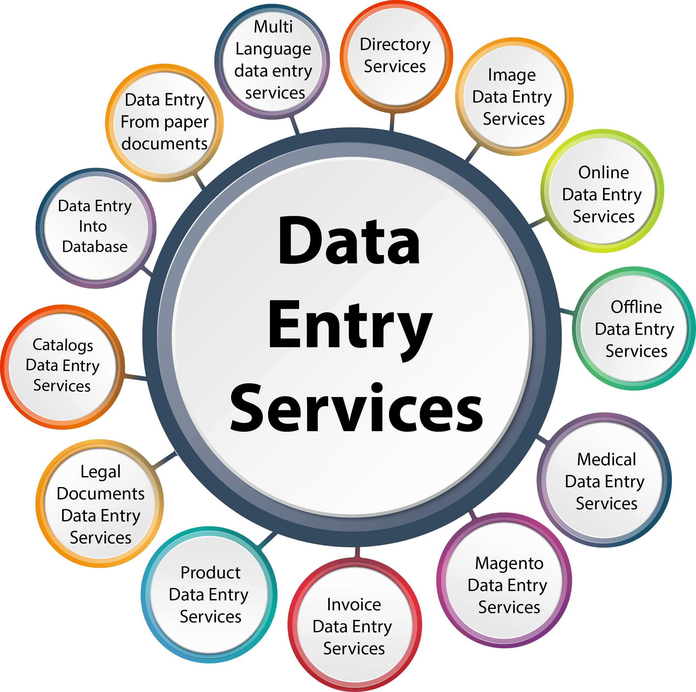
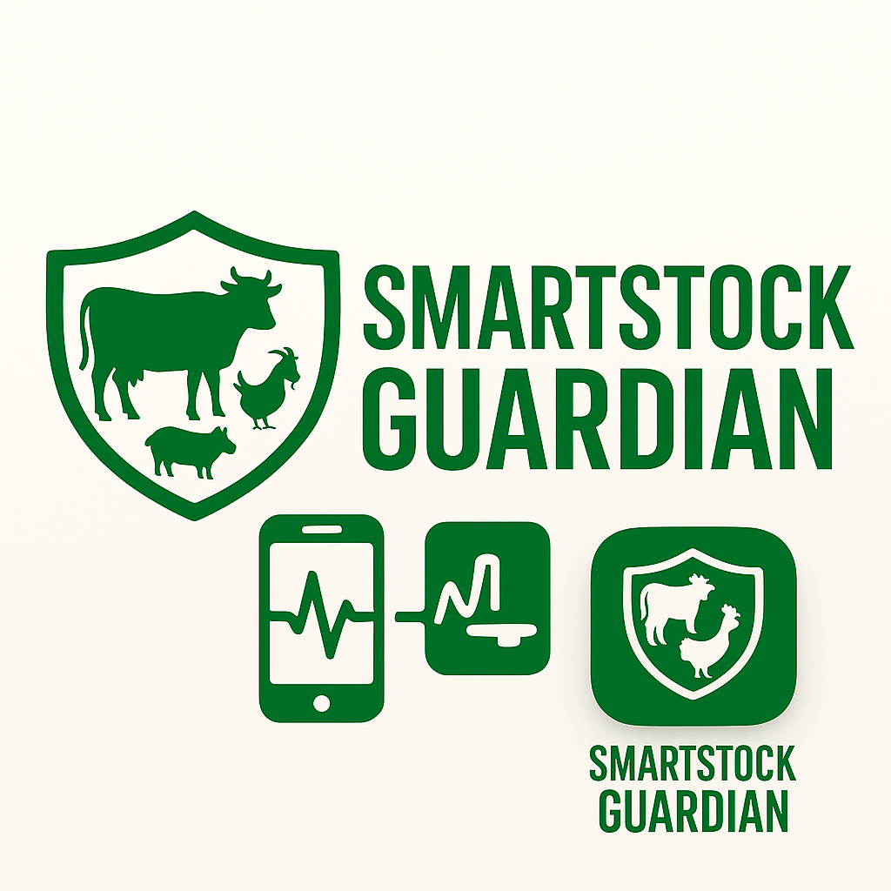

Portfolio Website
As a creative graphic designer, I craft visually stunning designs that capture attention and convey messages effectively. With expertise in design principles, typography, and visual storytelling, I develop compelling graphics for various mediums, including digital platforms, print materials, and branding.
Key Skills:
1. Design software: Proficient in Photopea
2. Visual storytelling: Ability to convey messages through creative visuals.
3. Branding: Developing consistent visual identities for businesses and organizations.
Strengths:
1. Creativity: Bringing innovative ideas to life.
2. Attention to detail: Ensuring high-quality designs.
3. Adaptability: Adjusting designs to fit various formats and mediums.

Data Entry
Data Entry Clerk
As a detail-oriented Data Entry Clerk, I accurately and efficiently enter, update, and maintain data in various systems. With strong organizational skills and attention to detail, I ensure data integrity and support business operations.
Key Skills:
1. Data entry: Accurate and efficient data entry into various systems.
2. Attention to detail: Ensuring data accuracy and quality.
3. Organizational skills: Managing and prioritizing data entry tasks.
Strengths:
1. Accuracy: Maintaining high levels of data accuracy.
2. Efficiency: Completing data entry tasks efficiently.
3. Reliability: Consistently meeting deadlines and expectations.

LOGO
As a creative graphic designer, I craft visually stunning designs that capture attention and convey messages effectively. With expertise in design principles, typography, and visual storytelling, I develop compelling graphics for various mediums, including digital platforms, print materials, and branding.
Key Skills:
1. Design software: Proficient in Photopea
2. Visual storytelling: Ability to convey messages through creative visuals.
3. Branding: Developing consistent visual identities for businesses and organizations.
Strengths:
1. Creativity: Bringing innovative ideas to life.
2. Attention to detail: Ensuring high-quality designs.
3. Adaptability: Adjusting designs to fit various formats and mediums.

Data Science Student
As a dedicated Data Science student, I'm passionate about uncovering insights and knowledge from data. I'm developing skills in machine learning, data visualization, and statistical analysis to drive informed decision-making.
Key Areas of Study:
1. Machine learning: Building predictive models.
2. Data visualization: Communicating insights effectively.
3. Statistical analysis: Understanding data distributions.
Goals:
1. Apply data science: Solve real-world problems.
2. Stay updated: Follow industry trends.
3. Develop skills: Enhance expertise.

Data Entry
Data Entry Clerk
As a detail-oriented Data Entry Clerk, I accurately and efficiently enter, update, and maintain data in various systems. With strong organizational skills and attention to detail, I ensure data integrity and support business operations.
Key Skills:
1. Data entry: Accurate and efficient data entry into various systems.
2. Attention to detail: Ensuring data accuracy and quality.
3. Organizational skills: Managing and prioritizing data entry tasks.
Strengths:
1. Accuracy: Maintaining high levels of data accuracy.
2. Efficiency: Completing data entry tasks efficiently.
3. Reliability: Consistently meeting deadlines and expectations.

Smart Stock Guardian (Creative Animation)
Smart Stock Guardian is a creative animation project designed to visualize and monitor stock levels in real time. Using engaging graphics and smooth transitions, this animation helps users intuitively understand inventory trends and alerts for low or surplus stock.
Key Features:
1. Real-time stock visualization with animated charts and icons.
2. Alert system for low or surplus inventory.
3. User-friendly interface for quick insights.
Technologies:
1. Figma
2. Blender
3. Flutterflow
View the presentation:
https://docs.google.com/presentation/d/1B9yVg-R61uj6xWrzAIzKQWSKvPxrczwKxd-weuFh3n0/present?slide=id.p